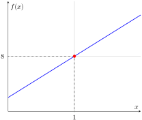
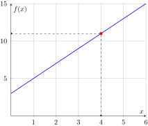

Find \(\displaystyle\lim_{x\to 2} (3x^2+2x-1)\text{.}\) Justify your answer.
Section Introduction to Limits
Consider the function \(f(x) = 3x+5\text{.}\) What happens as \(x \to 1\text{?}\) We say that \(\displaystyle\lim_{x\to 1} (3x+5) = \text{.}\)
Solution.
To find \(\displaystyle\lim_{x\to 1} (3x+5)\text{,}\) we examine the function’s behavior as \(x\) approaches \(1\) from both sides:
-
From the left: Let \(x = 0.999999\text{.}\)\begin{equation*} f(0.999999) = 3(0.999999) + 5 = 2.999997 + 5 = 7.999997 \end{equation*}
-
From the right: Let \(x = 1.000001\text{.}\)\begin{equation*} f(1.000001) = 3(1.000001) + 5 = 3.000003 + 5 = 8.000003 \end{equation*}
As \(x\) gets closer to \(1\) from both directions, \(f(x)\) approaches \(8\text{.}\) Therefore, we say that \(\displaystyle\lim_{x\to 1} (3x+5) = 8\text{.}\)

Example 2. Limit of a Polynomial.
Example 3. Numerical Exploration of a Hole.
Consider the function: \(\displaystyle f(x)=\frac{x^3-1}{x-1}\text{.}\) What happens to \(f(x)\) as \(x\) gets closer to \(1\text{?}\)
| \(x\) | \(f(x)\) | \(x\) | \(f(x)\) |
|---|---|---|---|
| 1.1 | 3.31 | 0.9 | 2.71 |
| 1.01 | 3.0301 | 0.99 | 2.9701 |
| 1.001 | 3.003 | 0.999 | 2.997 |
| 1.0001 | 3.0003 | 0.9999 | 2.9997 |
Our algebraic result is the same as our numeric result. Our algebraic result is based on the following idea for what a limit should mean: \(f(x)\) gets closer and closer to \(L\) as \(x\) gets closer to \(a\text{.}\) The variable \(x\) never actually reaches \(a\text{.}\)
Checkpoint 5. Direct Substitution in a Rational Function.
Calculate \(\displaystyle\lim_{x\to 2}\frac{x+3}{x+6}\)
Checkpoint 6. Limit by Factoring.
Calculate \(\displaystyle\lim_{x\to 1}\frac{x^2+x-2}{x^2-1}\)
Consider the function \(f\) given by \(f(x)=2x+3\text{.}\) Suppose we select input numbers \(x\) closer and closer to the number 4. As input numbers approach 4 from either side, \(2x+3\) approaches 11.
An arrow, \(\rightarrow\text{,}\) represents "approaches from either side." The statement above can be written: \(x \to 4, 2x+3 \to 11\text{.}\) The number 11 is the limit, abbreviated as: \(\displaystyle\lim_{x \rightarrow 4}(2x+3)=11\text{.}\)

Definition 8. Limit of a Function.
A function \(f\) has the limit as \(x\) approaches \(a\) from either side, written
\begin{equation*}
\displaystyle\lim_{x \rightarrow a}f(x)=L\text{,}
\end{equation*}
if all values \(f(x)\) for \(f\) are close to \(L\) for values of \(x\) that are arbitrarily close, but not equal, to \(a\text{.}\)
Limits and function values are not the same thing. Finding a limit is not the same as computing \(f(x)\text{;}\) a limit looks at where the function is going as it gets close to a point, not where it actually is at that point \(x=a\) .
Example 9. The Dynamic Limit Process.
Find \(\displaystyle\lim_{x\to 1} \frac{(x^2-1)}{(x-1)}\)
The value \(f(1) \) of the function is not defined, since plugging in \(x=1 \) produces \(0/0,\) whereas the values at points close to 1, like \(1.01,.999,1.000045,\) and so on, are perfectly well defined and can be calculated. And if you calculate several of them you will notice a definite trend: as you get closer to 1, the values converge to 2.
Suppose \(f(x)\) is given, and we would like to find the limit as \(x\to a\text{.}\) We are interested in points in a neighborhood around \(a,\) points close to \(a,\) points \(x\) such that \(x-a\) is a very small (positive or negative) number. If we call this small number \(h\text{,}\) then this simply means
\begin{equation*}
x - a = h , \text{ or equivalently } x = a + h
\end{equation*}
Note that even if \(f(x) \) is undefined at \(x=a \) (like the example above), these nearby values can be calculated and the limit determined.
We can use the \(h\)-method to find limits by looking at a neighborhood \(x = a + h\) as \(h \to 0\text{.}\)
\begin{equation*}
\displaystyle\lim_{x\to a} f(x)=\lim_{h\to 0} f(a+h)
\end{equation*}
Remark 10. The Three-Step Process for Limits.
The dynamic process of taking a limit is here broken down into three natural steps. To find \(\displaystyle\lim_{x\to a} f(x)\text{:}\)
-
Evaluate \(f(a+h)\text{,}\) a generic value at a nearby point.
-
Simplify, collect terms, cancel common factors in the numerator and denominator, and otherwise reorganize this expression into a convenient form.
-
Limit: Now we can let \(h \to 0\text{.}\) The remainders small (h) go to zero, and we are left with the residual limit:\begin{equation*} \lim_{x \to a} f(x) \end{equation*}
Example 11. Using the \(h\)-method.
Find \(\displaystyle\lim_{x\to 3} \frac{(x^2-3x)}{(2x-6)}\)
Solution.
-
Notice that \(f(3)\) is undefined, since both numerator and denominator zero out at \(x=3\text{.}\)
-
Plug in \(x=3+h\) into the expression for \(f(x)\text{:}\)\begin{equation*} f(3+h) = \frac{(3+h)^2-3(3+h)}{2(3+h)-6} = \frac{9+6h+h^2-9-3h}{6+2h-6} \end{equation*}with minimal expansion of terms.
-
Simplify and put into useful form:\begin{equation*} f(3+h) = \frac{3h+ h^2}{2h} = \frac{3+h}{2} \end{equation*}after canceling \(h\) in the numerator and denominator.
-
Now let \(h \to 0\) without any problem:\begin{equation*} \lim_{h \to 0} f(3+h) = \lim_{h \to 0} \frac{3+h}{2} = \frac{3}{2} \end{equation*}
Checkpoint 12. Rational Function with Quadratic Factors.
Solution.
Method 1: Factoring
First, we factor the quadratic expressions in the numerator and denominator:
\begin{equation*}
\frac{(2x-1)(x-2)}{(5x+3)(x-2)}
\end{equation*}
Since we are taking the limit as \(x \to 2\text{,}\) we assume \(x \neq 2\) and cancel the common factor:
\begin{equation*}
\lim_{x \to 2} \frac{2x-1}{5x+3} = \frac{2(2)-1}{5(2)+3} = \frac{3}{13}
\end{equation*}
Method 2: The \(h\)-method
Let \(x = 2 + h\text{.}\) As \(x \to 2\text{,}\) \(h \to 0\text{.}\) We substitute into the function:
\begin{align*}
f(2+h) \amp = \frac{2(2+h)^2 - 5(2+h) + 2}{5(2+h)^2 - 7(2+h) - 6}\\
\amp = \frac{2(4 + 4h + h^2) - 10 - 5h + 2}{5(4 + 4h + h^2) - 14 - 7h - 6}\\
\amp = \frac{8 + 8h + 2h^2 - 10 - 5h + 2}{20 + 20h + 5h^2 - 14 - 7h - 6}\\
\amp = \frac{3h + 2h^2}{13h + 5h^2} = \frac{h(3 + 2h)}{h(13 + 5h)}
\end{align*}
Canceling the \(h\) and letting \(h \to 0\text{:}\)
\begin{equation*}
\lim_{h \to 0} \frac{3 + 2h}{13 + 5h} = \frac{3 + 0}{13 + 0} = \frac{3}{13}
\end{equation*}